遊びで植物を育てよう
2025/06/15
フレンチマリーゴールド（グランドコントロール）は巨大です。
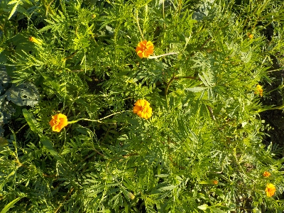
一株が大きいです。畑の隙間に植えようと思っていたんですが、これだけ大きいとある程度のスペースがないと植えれないですね。
ポット苗があるんですが、植える場所が決めれなくて植えれないままになっています。
【マリーゴールドTOP】
【花TOP】
【園芸TOP】
2025/03/23
フレンチマリーゴールド（グランドコントロール）のタネを蒔きました。
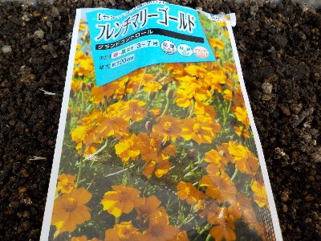
センチュウで困っているわけではないですが、効果があるといわれると気になって購入しました。
こういうものは畑に直播な気がしますが、少量のタネを買ったのでプランターとポットで育苗してから畑に植えるつもりです。
【マリーゴールドTOP】
【花TOP】
【園芸TOP】
2022/04/09
マリーゴールドのタネを蒔きました。
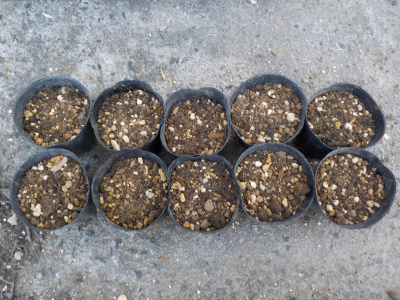
種蒔きスタートです。
1つのポットに5粒種を蒔きました。
【マリーゴールドTOP】
【花TOP】
【園芸TOP】
2022/03/13
マリーゴールドのタネは落ちないんですね。
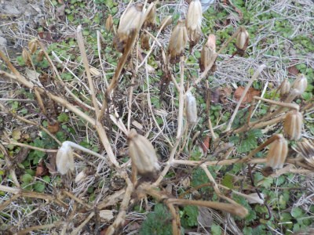
枯れたマリーゴールドですが、タネがほとんど付いたままです。
手でつまんで引き抜いたら大量に種が収獲できました。
簡単に沢山収穫できるので楽しかったです。
そのうちポットに蒔いて育てようと思います。
【マリーゴールドTOP】
【花TOP】
【園芸TOP】
2021/10/31
マリーゴールドがこんもりとしています。

地植えにしたマリーゴールドがあちこちでこんもりと半球状態で開花しています。
畑が賑やかになっていいですね。来年もあちこちに植えようと思います。
【マリーゴールドTOP】
【花TOP】
【園芸TOP】
2021/07/18
マリーゴールドの鉢上げが続いています。
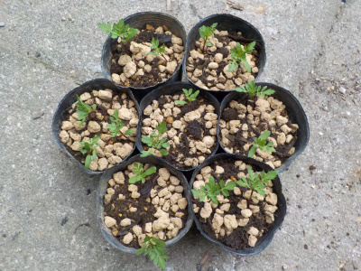
マリーゴールド増殖中ですが、この作業って何時までやっていいんでしょうね。
8月とか9月に種蒔きしたものでも大きく育つのかな？
まだ種はあのでもうちょっと続けると思います。
今回から1ポットに2株以上植えることにしました。土の節約です。
【マリーゴールドTOP】
【花TOP】
【園芸TOP】
2021/06/26
マリーゴールドをポットにまた分けました。
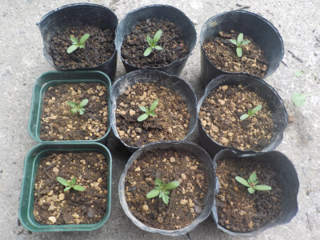
まだ苗が小さいのでポットに植え替えがしやすかったです。
これくらいのサイズで植え替えすると根っこを傷めないでいいですね。
前回花が咲いてから植替えしたものは2本枯れてしまいました。
【マリーゴールドTOP】
【花TOP】
【園芸TOP】
2021/06/13
マリーゴールドをポットに分けました。
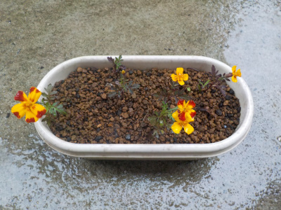
小さいプランターで育ててたマリーゴールドの花が咲きました。
株が小さくてひょろひょろしてても花が咲くんですね。
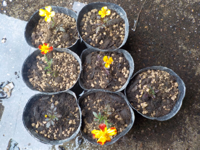
庭や畑に植えるつもりなのでポットに分けました。
だいぶ大きくなっていたため、植替えの時に根っこがブチブチ切れてしまいました。
もっと苗が小さい状態で植え替えした方がよさそうです。
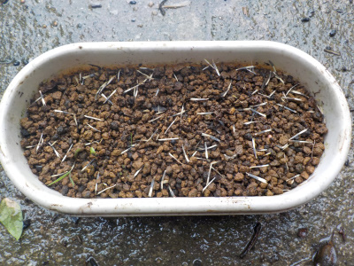
プランターに再び種を蒔いで数を増やします。
【マリーゴールドTOP】
【花TOP】
【園芸TOP】
2021/04/20
マリーゴールドの種をパラパラまきました。
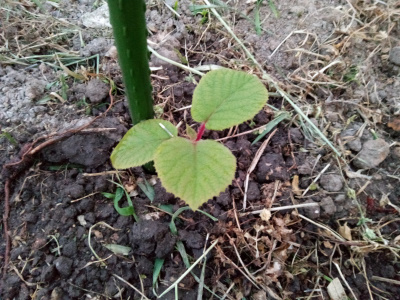
実生のキウイを植えた周りがちょっと空きスペースになっていました。
雑草が生えていないので、ここに種を蒔いたら育つかなと思いパラパラとマリーゴールドの種を蒔きました。
育つとうれしい。
【マリーゴールドTOP】
【花TOP】
【園芸TOP】
2021/04/04
マリーゴールドの芽が出ました。
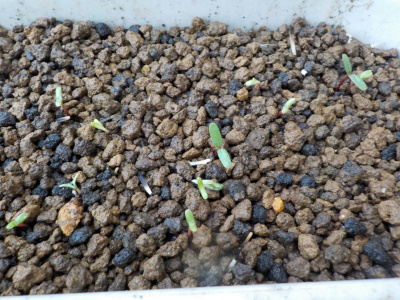
このごろ気温が高かったせいか、もう芽がでました。
しっかりしてそうな葉っぱなので、直播きしても育ちそうな感じがします。
【マリーゴールドTOP】
【花TOP】
【園芸TOP】
2021/03/28
小さいプランターにマリーゴールドの種を蒔きました。

種をどれくらいの密度で蒔いていいのかわからないので多めに蒔きました。
種はまだ沢山残っています。
ちょっとづつポットやプランターで育てるのは面倒なので、畑を耕して種を蒔こうかと思っています。
【マリーゴールドTOP】
【花TOP】
【園芸TOP】
2021/01/31
マリーゴルドの種を取りました。
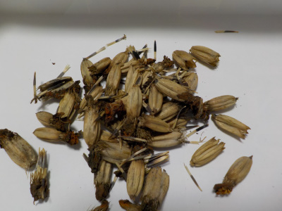
イチゴの本を読んでいたら、マリーゴールドを植えましょうと書いてあったので種を取りました。
これでマリーゴールドが大量生産できます。
4月になったらポットに蒔いて、育ったらあちこちに植えようと思っています。
【マリーゴールドTOP】
【花TOP】
【園芸TOP】
コンパニオンはほとんど効果ない。気休めだって意見もありますね。
【おいしいものを食べよう。】【しっかり寝よう。】
【ソロ活をしよう!】【季節感のあることをしよう。】【動画視聴はほどほどに。】【当サイトの全てのコンテンツは無断転載禁止です。】